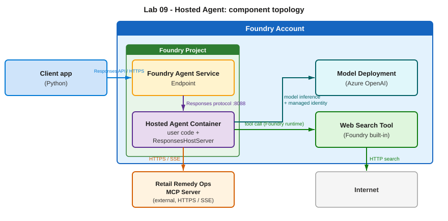

Build & run a hosted agent
A Prompt Agent (Modules 04–07) is configured declaratively on the Foundry service — you give it a model, instructions, and tools, and Foundry runs it. A hosted agent is different: you write the agent as a container that Foundry hosts and scales, while Foundry provides a managed endpoint, autoscaling, observability, and a dedicated identity.

Hosted agents are a preview feature and the full hands-on requires Python packaging and deployment. This is a read-only concept module in the portal-first workshop — read it to understand the hosted-agent model, then follow the source lab when you want to deploy one.
What a hosted agent is — and when to use one
Use a hosted agent when you need full control of the agent's orchestration — custom tools, your own libraries, or logic that doesn't fit the declarative Prompt Agent model — but still want a fully managed, serverless endpoint.
How it works
- Responses protocol — a hosted agent speaks the OpenAI-compatible Responses protocol. You don't implement that server by hand: the Agent Framework's
ResponsesHostServerwraps yourAgentand serves the protocol for you. - Its own identity — every hosted agent gets its own Microsoft Entra agent identity at deploy time. That identity (not yours) calls models and tools at runtime, with implicit access to inference and session storage inside its own project.
- Wired to real tools — the workshop's hosted agent exposes the live
retail_remedy_opsMCP server from Module 06 plus the Foundry hosted web search tool.
Two ways to deploy
| Path | Result | Notes |
|---|---|---|
| From a container image | …-hosted-container |
Build with Docker, push to a registry, point Foundry at the image. Skipped in the current preview. |
| From source code (recommended) | …-hosted-code |
Hand Foundry a zip of the agent bundle; it builds the image remotely — no local Docker. |
Why it matters
This is the step from "declarative agent in the portal" to "your own code, running fully managed." It's the foundation for the toolbox capstone in Module 10, which deploys a new version of this same hosted agent.